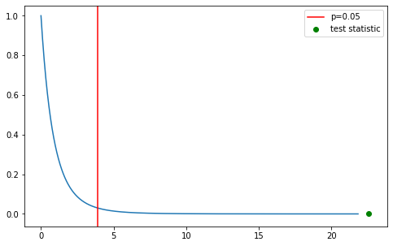

Use
ANOVA (Analysis of Variance) is a significance test that tests whether the population means from $n$ different groups are the same using the F distribution (therefore only works on numerical response data). It can test between two or more populations, therefore generalizing the t-test beyond just two groups. Examples of when you might want to do an ANOVA test:
- Testing whether employee stress levels are the same or different before, during, and after layoffs.
- Students from different colleges take the same exam. You want to see if one college outperforms the other.
- A factory is testing three different methods for producing breadsticks and wants to know which yields a superior crunchiness.
One-Way vs. Two-Way ANOVA
Refers to the number of independent variables in the test.
One-Way
- Testing to see if there is a difference in the single independent variable between $n$ groups
- If $n=2$, it is equivalent to a t-test and you should just do that instead $(F = t^2)$
Two-Way
- Tests the impact of two independent variables that can have multiple levels on a single dependent variable
- Can be done with replication, which means you’re duplicating your test(s) with multiple groups, meaning they are doing more than one thing
Levels refers to the different groups within an independent variable. E.g. one independent variable is brand of cereal: Cheerios, Corn Flakes, Shreddies (3 levels). Another other independent variable is sugar content: sweetened or unsweetened (2 levels).
Assumptions (focusing on One-Way ANOVA)
- Data from each group is generated froma a normal (or approximately normal) distribution.
- Responses in a given group are independent and identically distributed (I.I.D)
- The variance of each group is the same (but can be unknown at the outset of the test)
TLDR: the groups have the same distribution shapes, but testing to see if they’re centered around different means.
This is an assumption under ideal circumstances, but doens’t need to be absolute - ANOVA is robusy to heterogeneity (i.e. difference) of variance so long as the largest variance isn’t more than 4 times the smallest variance. The general affect that heterogeneity is that it makes ANOVA less efficient and the test has less power.
Null and Alternate Hypotheses
$H_0$: The group means come from the same population: $\mu_1 = \mu_2 = \mu_n $
$H_A$: The group means don’t come from the same population, the variable of interest is different due to the groups.
ANOVA is always a one-sided hypothesis test.
Test Statistic
Test Statistic $W$ is defined as:
$$ W = \frac{MS_B}{MS_W} $$
Where $MS_B$ is the Between Group Variance, defined as:
$$ MS_B = m \times \text{sample variance of group means} $$
$$ MS_B = \frac{m}{n - 1} \sum_{i=1}^n \left(\bar{x}_{i} - \bar{x}\right)^{2} $$
And $MS_W$ is the Average Within Group Variance, defined as:
$$ MS_W = \text{sample mean of } s_{i}^2, \ldots, s_{n}^2 $$
$$ MS_W = \frac{s_{i}^2, \ldots , s_{n}^2}{n} $$
Example
Conducting a One-Way ANOVA test to see whether employee stress levels are the same or different before, during, and after layoffs. Employees have their stress levels surveyed at these three different times and the average stress level of the group is calculated.
$H_0$: Layoffs don’t have an impact on stress levels, so the mean stress level before, during, and after the layoffs should be the same.
$H_A$: Layoffs do impact stress levels, so means should be different before, during, and after.
This is a one-sided test that we will conduct with significance $\alpha = 0.05$
import numpy as np
import matplotlib.pyplot as plt
from scipy.stats import f, f_oneway
normal_stress = np.array([2, 3, 7, 2, 6])
announced_stress = np.array([10, 8, 7, 5, 10])
during_stress = np.array([10, 13, 14, 13, 15])
groups = [normal_stress, announced_stress, during_stress]
total_data = np.concatenate(groups, axis = 0)
m = len(normal_stress)
n = len(groups)
for group in groups:
print(group.mean())
4.0
8.0
13.0
m, n
(5, 3)
MSw = np.array([x.var(ddof=1) for x in groups]).mean() # taking sample variance so ddof=1
MSw
4.5
MSb = np.sum(np.square(np.array([x.mean() - total_data.mean() for x in groups]))) * (m/(n - 1))
MSb
101.66666666666666
W = MSb / MSw
W
22.59259259259259
Calculating the same test statistic with SciPy’s f_oneway method:
statistic, p_value = f_oneway(normal_stress, announced_stress, during_stress)
statistic, p_value
(22.59259259259259, 8.538592454274676e-05)
W == statistic
True
Test Statistic Intuition
If population means $\mu_i$ are equal then ratio that equals $W$ should be near 1, with the variance between the groups being close to the variance within the groups (since they’re all from the same underlying population). If they’re not equal then the between group variance $MS_B$ should be larger while the average within group variance $MS_W$ stays the same.
Null Distribution
$f\left(W \vert H_0\right)$ is the PDF of $W \text{\textasciitilde} F\left(n - 1, n (m - 1)\right)$, where $F$ is the F-Distribution with $(n - 1)$ and $n(m - 1)$ degrees of freedom.
from scipy.stats import f
dfn = n - 1
dfd = n * (m - 1)
f_dist = f(dfn, dfd)
f_dist.ppf(0.95)
3.8852938346523933
dfn, dfd
(2, 12)
f_range = np.linspace(f_dist.ppf(0.0001), f_dist.ppf(0.9999), num=1000)
plt.figure(figsize=(8,5))
plt.plot(f_range, f_dist.pdf(f_range))
plt.axvline(f_dist.ppf(0.95), c='r', label='p=0.05')
plt.scatter(W, f_dist.pdf(W), c='g', label='test statistic')
plt.legend()
<matplotlib.legend.Legend at 0x7f8f128913d0>

Given the results of the test we can reject the null hypothesis $H_0$ in favour of $H_A$ - employee stress levels do seem to be impacted by layoffs (duhhhh).
Appendix - Refresh on Population and Sample Variance/Standard Deviation Calculations
Population Variance and Standard Deviation:
$$ \sigma^2 = \frac{\Sigma (x_i - \mu)^2}{N} $$
$$ \sigma = \sqrt{\frac{\Sigma (x_i - \mu)^2}{N}} $$
Sample Variance and Standard Deviation:
$$ S^2 = \frac{\Sigma (x_i - \bar{x})^2}{n - 1} $$
$$ s = \sqrt{\frac{\Sigma (x_i - \bar{x})^2}{n - 1}} $$
In the population calculations, we’re dividing by the total size of the population, while in the sample calculations we’re dividing by the sample’s total degrees of freedom.